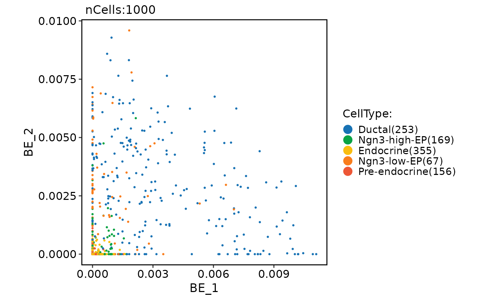

Run NMF (non-negative matrix factorization)
Usage
RunNMF(object, ...)
# S3 method for class 'Seurat'
RunNMF(
object,
assay = NULL,
layer = "data",
features = NULL,
nbes = 50,
nmf.method = "RcppML",
tol = 1e-05,
maxit = 100,
rev.nmf = FALSE,
ndims.print = 1:5,
nfeatures.print = 30,
reduction.name = "nmf",
reduction.key = "BE_",
verbose = TRUE,
seed.use = 11,
...
)
# S3 method for class 'Assay'
RunNMF(
object,
assay = NULL,
layer = "data",
features = NULL,
nbes = 50,
nmf.method = "RcppML",
tol = 1e-05,
maxit = 100,
rev.nmf = FALSE,
ndims.print = 1:5,
nfeatures.print = 30,
reduction.key = "BE_",
verbose = TRUE,
seed.use = 11,
...
)
# S3 method for class 'Assay'
RunNMF(
object,
assay = NULL,
layer = "data",
features = NULL,
nbes = 50,
nmf.method = "RcppML",
tol = 1e-05,
maxit = 100,
rev.nmf = FALSE,
ndims.print = 1:5,
nfeatures.print = 30,
reduction.key = "BE_",
verbose = TRUE,
seed.use = 11,
...
)
# Default S3 method
RunNMF(
object,
assay = NULL,
layer = "data",
nbes = 50,
nmf.method = "RcppML",
tol = 1e-05,
maxit = 100,
rev.nmf = FALSE,
ndims.print = 1:5,
nfeatures.print = 30,
reduction.key = "BE_",
verbose = TRUE,
seed.use = 11,
...
)Arguments
- object
An object. This can be a Seurat object, an Assay object, or a matrix-like object.
- ...
Additional arguments passed to RcppML::nmf or NMF::nmf function.
- assay
A character string specifying the assay to be used for the analysis. Default is NULL.
- layer
A character string specifying the layer to be used for the analysis. Default is "data".
- features
A character vector specifying the features to be used for the analysis. Default is NULL, which uses all variable features.
- nbes
An integer specifying the number of basis vectors (components) to be computed. Default is 50.
- nmf.method
A character string specifying the NMF algorithm to be used. Currently supported values are "RcppML" and "NMF". Default is "RcppML".
- tol
A numeric value specifying the tolerance for convergence (only applicable when nmf.method is "RcppML"). Default is 1e-5.
- maxit
An integer specifying the maximum number of iterations for convergence (only applicable when nmf.method is "RcppML"). Default is 100.
- rev.nmf
A logical value indicating whether to perform reverse NMF (i.e., transpose the input matrix) before running the analysis. Default is FALSE.
- ndims.print
An integer vector specifying the dimensions (number of basis vectors) to print in the output. Default is 1:5.
- nfeatures.print
An integer specifying the number of features to print in the output. Default is 30.
- reduction.name
A character string specifying the name of the reduction to be stored in the Seurat object. Default is "nmf".
- reduction.key
A character string specifying the prefix for the column names of the basis vectors. Default is "BE_".
- verbose
A logical value indicating whether to print verbose output. Default is TRUE.
- seed.use
An integer specifying the random seed to be used. Default is 11.
Examples
pancreas_sub <- RunNMF(object = pancreas_sub)
#>
#> iter | tol
#> ---------------
#> 1 | 6.95e-01
#> 2 | 1.01e-01
#> 3 | 3.00e-02
#> 4 | 1.43e-02
#> 5 | 7.77e-03
#> 6 | 4.70e-03
#> 7 | 3.03e-03
#> 8 | 2.09e-03
#> 9 | 1.58e-03
#> 10 | 1.26e-03
#> 11 | 1.04e-03
#> 12 | 8.96e-04
#> 13 | 7.96e-04
#> 14 | 7.26e-04
#> 15 | 6.62e-04
#> 16 | 5.82e-04
#> 17 | 4.81e-04
#> 18 | 4.11e-04
#> 19 | 3.53e-04
#> 20 | 3.08e-04
#> 21 | 2.70e-04
#> 22 | 2.40e-04
#> 23 | 2.14e-04
#> 24 | 1.93e-04
#> 25 | 1.76e-04
#> 26 | 1.63e-04
#> 27 | 1.53e-04
#> 28 | 1.44e-04
#> 29 | 1.37e-04
#> 30 | 1.33e-04
#> 31 | 1.28e-04
#> 32 | 1.24e-04
#> 33 | 1.19e-04
#> 34 | 1.13e-04
#> 35 | 1.07e-04
#> 36 | 1.03e-04
#> 37 | 9.75e-05
#> 38 | 9.16e-05
#> 39 | 8.53e-05
#> 40 | 7.96e-05
#> 41 | 7.51e-05
#> 42 | 7.14e-05
#> 43 | 6.78e-05
#> 44 | 6.48e-05
#> 45 | 6.27e-05
#> 46 | 6.07e-05
#> 47 | 5.99e-05
#> 48 | 6.05e-05
#> 49 | 6.32e-05
#> 50 | 6.71e-05
#> 51 | 7.22e-05
#> 52 | 7.71e-05
#> 53 | 7.80e-05
#> 54 | 7.30e-05
#> 55 | 6.21e-05
#> 56 | 5.22e-05
#> 57 | 4.55e-05
#> 58 | 4.09e-05
#> 59 | 3.77e-05
#> 60 | 3.53e-05
#> 61 | 3.34e-05
#> 62 | 3.16e-05
#> 63 | 2.99e-05
#> 64 | 2.85e-05
#> 65 | 2.70e-05
#> 66 | 2.52e-05
#> 67 | 2.34e-05
#> 68 | 2.20e-05
#> 69 | 2.06e-05
#> 70 | 1.91e-05
#> 71 | 1.79e-05
#> 72 | 1.68e-05
#> 73 | 1.58e-05
#> 74 | 1.48e-05
#> 75 | 1.39e-05
#> 76 | 1.32e-05
#> 77 | 1.21e-05
#> 78 | 1.14e-05
#> 79 | 1.09e-05
#> 80 | 1.05e-05
#> 81 | 1.01e-05
#> 82 | 9.80e-06
#> ℹ [2025-07-04 02:58:34] BE_ 1
#> Positive: Spp1, Cyr61, Vim, Cldn3, Jun, Sparc, Atp1b1, Sox4, Anxa2, Bicc1
#> Sox9, Krt18, Ifitm2, Peg3, Lurap1l, Myl12a, Krt8, 1700011H14Rik, Rhob, H19
#> Mgst1, Hhex, Dbi, Gpx1, Hes1, Epcam, Krt19, Cd24a, Klf6, Clu
#> Negative: Fgf11, Cpxm1, Setdb2, Hist1h4j, Prps2, Apobr, Sobp, Dynll1, Serp1, Tmcc3
#> Clip3, Ankrd37, Tex30, Spcs3, Aqp7, Dnah9, Cox7a1, Impa2, Ace2, Vipr1
#> Chrnb4, Tnfaip8l3, Ppp1r3b, Gm15816, Xkr5, Vsig10l, Wdr62, Oxtr, Antxr1, Msantd1
#> BE_ 2
#> Positive: Cck, Gadd45a, Ppp1r14a, Selm, Tmsb4x, Mdk, Btbd17, Nkx6-1, Tubb3, Sh3bgrl3
#> Igfbpl1, Jun, Sox4, Smarcd2, Cotl1, Upk3bl, Map1b, Cldn6, Mfap4, Ptma
#> Ttc28, Ifitm2, Hes6, Neurod2, Dbn1, Btg2, Syt13, Sult2b1, Mfng, Ly6e
#> Negative: Gmfg, Cpxm1, Setdb2, Fkbp9, Prps2, Apobr, Sobp, Dynll1, Mgat4a, P4ha3
#> Mrps25, Ankrd37, Eef2k, Nucb2, Tex30, Spcs3, Rsad1, Tnip1, Dnah9, Ispd
#> Adamtsl2, Axin2, Pbxip1, Impa2, Fkbp10, Tnfrsf21, Ace2, Chrnb4, Tnfaip8l3, Ppp1r3b
#> BE_ 3
#> Positive: Spp1, Id2, Atp1b1, Vim, Sparc, Mgst1, Mdk, Nudt19, Anxa2, Ccnd1
#> Dbi, Cldn3, Jun, Sox9, Ptn, Col9a3, Tkt, Hes1, Wfdc2, Smtnl2
#> Gsta3, Adamts1, Ifitm2, Aldoc, Cd24a, Tead2, Gpx1, Lurap1l, Ttyh1, Pebp1
#> Negative: Fgf11, Gmfg, Setdb2, Kif21b, Sobp, Tmcc3, Clip3, Ankrd37, Eef2k, Nucb2
#> Tex30, Aqp7, Tnip1, Dnah9, Ispd, Adamtsl2, Axin2, Cox7a1, Impa2, Fkbp10
#> Tnfrsf21, Ace2, Vipr1, Chrnb4, Tnfaip8l3, Gm26759, Ppp1r3b, Gm15816, Vsig10l, Syce1
#> BE_ 4
#> Positive: Mt1, Mt2, Clu, Ambp, Pdzk1ip1, Muc1, Krt18, Gapdh, Csrp2, Ldha
#> Serpinh1, H19, Rbbp7, H1f0, Hsd17b10, Cyba, Cldn10, Dbi, Eno1, Bex4
#> Epcam, Ybx1, Gsta3, Bex1, Mif, Krt19, Smco4, Tpi1, Acot1, Capg
#> Negative: Gmfg, Cpxm1, Setdb2, Kif21b, Sobp, Mgat4a, Serp1, Hn1l, Tmcc3, Mrps25
#> Clip3, Tex30, Spcs3, Rangap1, Aqp7, Rsad1, Dnah9, Ispd, Adamtsl2, Axin2
#> Fkbp10, Ace2, Vipr1, Chrnb4, Tnfaip8l3, Gm26759, Ppp1r3b, Xkr5, Vsig10l, Wdr62
#> BE_ 5
#> Positive: 2810417H13Rik, Rrm2, Hmgb2, Mcm5, Lig1, Dut, Gmnn, Pcna, Dek, Rpa2
#> Tyms, H2afz, Ranbp1, Tipin, Tuba1b, Mcm3, Uhrf1, Nasp, Rfc2, Orc6
#> Tubb5, Dhfr, Tk1, Hsp90aa1, Gins2, Mcm6, Ptma, Siva1, Mcm7, Dnajc9
#> Negative: Fgf11, Setdb2, Hist1h4j, Kif21b, Sobp, Serp1, Tmcc3, Clip3, Ankrd37, Aqp7
#> Rsad1, Tnip1, Dnah9, Ispd, Axin2, Rtkn, Cox7a1, Fkbp10, Tnfrsf21, Ace2
#> Vipr1, Chrnb4, Tnfaip8l3, Gm26759, Ppp1r3b, Gm15816, Vsig10l, Syce1, Wdr62, Oxtr
CellDimPlot(
pancreas_sub,
group.by = "CellType",
reduction = "nmf"
)
#> Warning: No shared levels found between `names(values)` of the manual scale and the
#> data's fill values.
